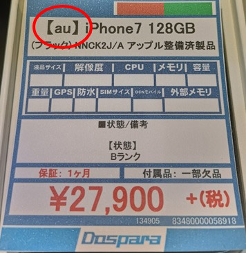
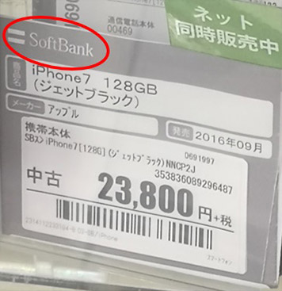
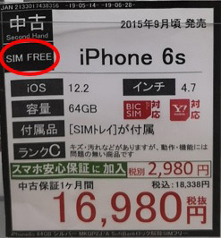

Guide to Cheap Smartphones
Created by Quinn
The purpose of this guide is to give you direction and help you find a cheap second-hand smartphone in Kyoto. There are many stores both online and offline that sell second hand phones and they come in various different physical conditions. They can be locked to certain networks or unlocked for use on any network. This guide will explain a bit about each, so you can decide which will work best for you.
NETWORK
Before looking for a phone its highly suggested you decide what data or voice plan that you want. Once you have chosen your plan you will know what network your phone needs to work on. If for example, you want to use AsahiNet; they only operate on the DoCoMo network. This means you have to either buy an unlocked phone or a DoCoMo phone. However, if you want to use QTmobile they have plans on AU, DoCoMo and SoftBank so you could buy any phone you want. If you haven’t chosen a cellphone plan yet and would like help choosing one please see my Cell Service Guide before proceeding.
Network Locked
If a smartphone is network locked it means that It will only operate on that specific network. So first look for phones that are labeled for use on the network your chosen plan uses. What ever store you choose they will have a label telling you what network each phone works on.
 Unlocked or SimFree
These phones aren’t locked to a specific network so you will be able to use them with any plan/sim card you want. The downside however is they are less common and typically more expensive. The upside is you are free to use any network, so if you ever decide to change to a different sim/plan/network your choices won’t be limited.
Physical Condition
Most shops use a condition grading system. The exact definition varies from shop to shop of course but here is the general idea of what to expect with each.
[A] No Scratches on the screen, dents or dings
[B] Light scratches or dents from every day use
[C] Scratches on display, dents, dings or possible cracks but still fully functional
As you would expect higher grade phones are more expensive. As the phones get older the price difference between the different grades gets smaller. So, check the price of each to see if its worth spending a little extra on a better condition device. At the end of the day though once you put it in a case most damage is covered up anyway.
Note: If you get an iPhone you should replace the battery if it hasn’t been changed recently. You can get a new one for roughly 1,000 yen or so on AliExpress. Apple limits the CPU performance of iPhones when the batteries get old and start to degrade. A fresh battery can make a big difference in the performance of an iPhone. If you want extra information about this check out: https://support.apple.com/en-us/HT208387
Where to buy?
Alright so now that you know what phone you need where do you get it? There are many choices around Kyoto such as, Dospara, Book Off, Sofmap, GEO, Hard off etc. Strangely enough these tend to be cheaper than amazon. I personally suggest checking google maps to see what stores are near you and go check their prices. You might encounter a sale or a special deal at one which is cheaper than the rest so, it’s always a good idea to shop around. If you don’t have the time or just want something fast its best to just order something online. I reccomend using https://geo-mobile.jp/ as they were a fair bit cheaper than amazon when I looked.